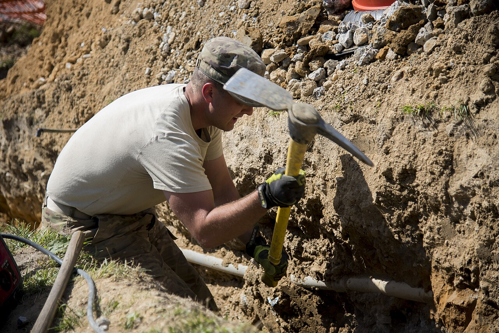

Water in the Basement After Rain: Drainage Problem or Foundation Problem?
Most water in a basement after rain is a drainage problem wearing a structural costume. The pattern gives it away: seepage at the joint where wall meets floor points to groundwater pressure and drainage; a stream through one crack points to water collecting against that wall; damp patches with no puddles are usually just moisture moving through porous concrete. Water becomes a foundation problem when it arrives with movement, meaning new or widening cracks, a wall starting to bow, or a corner sinking. Read the pattern first, and you will know which kind of fix, and which kind of company, you actually need.
Concrete looks solid but behaves more like a hard sponge: it absorbs water, transmits it slowly, and contains joints and tie holes that were never watertight. Meanwhile the soil against your basement is a reservoir. After rain it holds water against the wall under real pressure, pushing it through every available path. That is why a basement can be dry for years and then leak after one storm: the path was always there, and the storm finally supplied enough pressure.
This page works in the order a good inspector does. First, match your water pattern to its likely source in the table. Then run the simple checks that confirm it, including the garden-hose test. Then look at regional causes, because a Cedar Rapids basement and a Baton Rouge basement get wet for different reasons. Finally, the fix order and the costs, including the rule that decides most arguments in this trade: stabilize the structure first, then waterproof.
Request a free inspection
Match the pattern: where the water enters tells you the source
Use the table as a first diagnosis, not a final one. Note when the water appears (during rain, hours later, only in spring), where it enters (one crack, the cove joint, the middle of the floor), and what it looks like (clear, muddy, smelling of sewage). Those three observations, written down, will save you from at least one wrong quote, because each pattern has a different source and a differently priced fix.
The structural rows are the ones that matter most. Water plus movement means soil is shifting, and shifting soil opens new paths faster than any sealant can close them. If your pattern matches a structural row, the rest of this page still applies, but in the order set out below: the foundation gets fixed first, and waterproofing follows once the wall or footing has stopped moving.
One more pattern worth naming: muddy water. Clear water is usually rain or groundwater that filtered through soil. Water carrying silt or sand means soil itself is on the move, washing out from under a slab or footing, and that is a structural warning even when the volume is small. A basement that pumps out muddy water after storms deserves a structural inspection, not just a bigger sump pump.
| Water pattern | Likely source | Structural problem? |
|---|---|---|
| Seeping at the wall-floor joint after rain | Hydrostatic pressure from a high water table; clogged or missing drain tile | Usually no: waterproofing and drainage fix |
| Water streaming through one wall crack | Surface water collecting against that wall; grading or downspout discharge | Usually no: fix drainage, then seal or inject if the crack is non-structural |
| Dampness and white efflorescence, no puddles | Moisture vapor moving through porous concrete; minor seepage | No: humidity control and monitoring |
| Water plus new cracks, a bowing wall, or a sinking corner | Soil movement is opening paths for water | Yes: structural repair first, waterproofing second |
| Clear water bubbling up, or any sewage smell | Broken water line, sewer backup, or failed drain | Not foundation: plumber or municipality first |
| Flooding only in extreme storms | Storm sewer surcharge, or a sump pump overwhelmed or failed | Usually no: sump capacity, backup pump, backwater valve |
Is water in the basement after rain normal?
Some seepage is common in older basements, but water on the floor after every rain is not something to accept as normal; it means water is finding a path and pressure is building against the wall. Occasional dampness at the cove joint in a wet spring is a monitoring issue. Standing water, or water arriving with new cracks, needs a fix.
Check it yourself: find where the water comes from
The hose test is the classic way to isolate a leak. On a dry day, run a garden hose on the ground beside one section of wall for 20 to 30 minutes, then check inside. Move along the wall section by section. Water that appears during the test is surface water reaching that spot, which usually means grading, a downspout, or a window well right there. Water that never appears under the hose but floods in during storms is groundwater or storm-sewer related instead.
Round out the check during the next rain: watch the gutters for overflow, confirm every downspout discharges well away from the house, and check that soil slopes away from the walls on all sides. Look at window wells for standing water and test the sump pump by pouring in a bucket of water. Half of wet basements are explained by something on this list, and most of it is fixable in a weekend with a ladder, a level and a load of topsoil.
Timing is your other clue, and it costs nothing to collect. Water that arrives while it is still raining is almost always surface water: roof runoff, grading, or a crack fed directly from above. Water that shows up six to twenty-four hours after the rain stops is groundwater, rising through the soil and pressing in at the cove joint or through the floor. Write the timing down next to your photographs. Contractors diagnose faster, and quote more honestly, when the homeowner hands them a timeline instead of a puddle.
- Run the hose test one wall section at a time on a dry day
- Watch gutters and downspouts during actual rain
- Check grading: soil should slope away from every wall
- Inspect window wells for standing water
- Test the sump pump with a bucket of water
- Photograph entry points and note the timing of each leak
Why is water coming through my basement wall?
Because water follows pressure and the path of least resistance. Rain and groundwater build pressure in the soil against your wall, and the water enters wherever resistance is lowest: a crack, the joint between wall and floor, tie holes, or porous concrete itself. Finding the entry point tells you which fix you need; the source is always water collecting outside.
Can clogged gutters really damage my basement and foundation?
Yes, and it is one of the most common causes of a wet basement. A roof collects thousands of gallons in a single storm, and overflowing gutters or downspouts that end at the wall dump all of it into the soil right against your foundation. That saturated soil feeds leaks, raises pressure on walls, and can soften the ground under footings.
Root causes by region: why your basement gets wet where you live
In Cedar Rapids, the legacy of the 2008 flood still shapes basements: neighborhoods near the Cedar River sit in soils that saturate quickly, and many homes took on water then, so drainage systems and sump capacity matter more than wall coatings. In Madison, the isthmus between two lakes means a naturally high water table; basements there commonly seep at the cove joint in spring when the table peaks, a hydrostatic pattern rather than a structural one.
Baton Rouge basements and crawl spaces fight saturation from the other direction: heavy Gulf rain on flat delta soil, with a water table close to the surface for much of the year, so water arrives often and stays. Across all three regions the lesson is the same. Local water behavior decides which system works, and a fix copied from a different climate, like sealing walls against a water table that needs draining, tends to fail expensively.
Snowmelt deserves its own warning in the northern markets. A basement that stays dry through summer storms can still flood in March, when a winter's worth of snow melts over still-frozen ground that cannot absorb it. The water runs along the surface straight to your walls, at exactly the season when the water table is also at its highest. If your leaks are a spring-only event, that combination, not a failing wall, is the first suspect.
On the Gulf Coast the pattern flips again. Around Gulfport, the soil is sandier, the water table sits high year-round, and the defining events are tropical storms that drop a season of rain in two days. Basements are rare there for good reason; the local version of this problem is water under slabs and into crawl spaces, driven by surge, saturated sand and drainage overwhelmed all at once. The pattern-matching on this page still applies, but the fix leans toward drainage capacity and pumps sized for events, not averages.
Why does my basement only leak in spring?
Spring combines every wet-basement ingredient at once: snowmelt and spring rain saturate the soil, the water table rises to its yearly high, and frozen or compacted ground sheds water toward your walls instead of absorbing it. A basement that leaks only in spring is usually a drainage and water-table problem, not a failing foundation, unless cracks are growing too.
Can heavy rain alone damage a foundation?
Rain by itself rarely breaks a sound foundation, but sustained heavy rain exposes every weakness around one: it saturates soil until pressure against walls peaks, washes soil from under shallow footings and slabs, and finds cracks that dry weather hides. Most storm-related foundation damage is really drainage failure plus time, which is why the post-storm inspection matters.
Fix order and cost: structure first, waterproofing second
The sequence rule settles most waterproofing arguments: structure first, waterproofing second. Injection, interior drainage and coatings all assume a wall that has stopped moving. Seal a crack in a wall that is still bowing and the wall simply cracks beside the seal; install drainage under a sinking floor and the system slopes out of grade. When there is no movement, skip straight to waterproofing with a clear conscience, starting with the free fixes: gutters, downspouts and grading.
On price, published ranges put crack injection at $500 to $2,500 per crack and a full interior drainage system with sump pump at $2,000 to $6,000 for most basements. That gap is why diagnosis matters: homeowners regularly get quoted the full system for a problem one injection, or one downspout extension, would have solved. FoundationMatch is a matching service, not a contractor; the companies it connects you with should show you the entry pattern they found and price the fix that matches it, the way our basement waterproofing and drainage page lays out.
Expect a real choice between interior and exterior systems once drainage is ruled out. Exterior waterproofing digs down to the footing, seals the wall's outer face and replaces drain tile; it stops water before it enters the wall but costs the most and tears up landscaping. Interior systems collect the water that gets through and pump it away; they cost less, install in any season, and suit high water tables where exterior seals alone would still lose to pressure. Neither is the honest answer for a wall that is moving, which is why the sequence rule comes first.
Should I waterproof or fix the foundation first?
Fix the foundation first whenever the water is arriving with structural movement: new or widening cracks, a bowing wall, or a sinking corner. Waterproofing seals and drains a stable wall; on a moving wall, seals tear and systems fail. Once the structure is stable, waterproofing keeps it dry. Pure drainage problems, with no movement, can go straight to waterproofing.
Can sealing a crack stop water from coming into my basement?
Yes, if the crack is not structural and the water pressure behind it is modest. Full-depth injection of polyurethane or epoxy seals the crack through the whole wall thickness, unlike a surface patch, which fails quickly. If the wall is moving, or drainage keeps the soil saturated, the water will find or make another path, so fix those first.
When basement water is an emergency (and why you wait to finish it)
Treat water as an emergency in three situations: it is rising fast, it smells of sewage, or it has reached electrical outlets, panels or appliances. One homebuyer's account of walking away from a purchase describes water pouring over the breaker box during a rainy showing; that is a hard no until an electrician and a drainage fix have both been through. Shut off power from a dry location, keep people out of the water, and call for help rather than wading in to save stored boxes.
The slower emergency is the finished basement built over an occasional leak. Finishing traps moisture behind walls and under floors, grows mold where you cannot see it, and guarantees the finish is destroyed by the first serious storm. The discipline that works: fix the source, then let the basement stay dry through one full wet season before framing anything. It feels slow. It is still faster than finishing twice, and cheaper than paying a remediation crew to tear out new drywall.
After any significant water event, document before you clean. Photograph the high-water line, the entry points and any damaged belongings, and keep receipts for pumping, fans and emergency work. Even when groundwater itself is excluded from your policy, a burst pipe, a failed water heater or a backed-up drain in the same event may be covered, and the claim lives or dies on the evidence you gathered in the first day. That paperwork also becomes your disclosure record if you sell, proof of what happened and what you did about it.
What should I do right after heavy rain floods my basement?
Start with safety: stay out of standing water if it has reached outlets or appliances, and shut off power to the basement if you can do so dry. Move valuables and documents up, photograph everything for insurance, then pump or wet-vacuum once water stops rising. When it is dry, trace the entry pattern against the table above before calling anyone.
Can I finish my basement if it leaks occasionally?
Not safely, no. Finishing walls and floors over an occasional leak traps moisture behind the finish, feeds mold, and ruins the new work at the first bad storm. Fix the water source, then let the basement prove itself through a full wet season before you finish it. Homeowners who finish first and waterproof later reliably pay for both twice.
Frequently asked questions
Does homeowners insurance cover basement water damage?
Usually not when the water came through the foundation. Standard policies exclude groundwater seepage and flooding; a separate flood policy covers rising water, and a sump-pump or sewer-backup endorsement covers those specific failures if you bought one. Damage from a sudden burst pipe inside the house is the common covered case. Check your declarations page before a storm, not after.
How much does interior basement drainage with a sump pump cost?
Published ranges put a full interior drainage system with a sump pump at $2,000 to $6,000 for most basements, depending on perimeter length and whether the floor needs channels cut around all four walls or just the leaking side. Crack injection, at $500 to $2,500 per crack, is cheaper when one crack is the whole problem.
Will a dehumidifier fix my wet basement?
No. A dehumidifier manages airborne humidity and that musty smell; it does nothing about liquid water entering through the wall, floor or cove joint, and it cannot keep up with active seepage. Run one after the water source is fixed, to dry the space out and protect stored items. If the dehumidifier never cycles off, water is still getting in.
Is interior waterproofing just a bandaid?
It manages water instead of stopping it at the outside of the wall, which makes it the right tool for groundwater pressure and the wrong tool for a moving wall. Installed on a stable foundation with a working sump, an interior system keeps basements dry for decades. It earns the bandaid label only when it is sold to hide structural movement.
What can I do myself about a leaking basement wall crack?
Start outside, because the cheapest fixes are there: extend downspouts at least 6 feet from the wall, clear gutters, and add soil so the ground slopes away from the house. Inside, a DIY foam injection kit can seal a non-structural leaking crack. Skip surface-only patch compounds; water pressure pushes them out, usually within a season or two.
Does a wet basement lower my home's value?
Yes, especially if it is undisclosed or unexplained. Buyers discount for water history, and sellers must disclose known leaks in most states. A documented fix changes the story: waterproofing paperwork, an injection warranty, or structural repair records turn a red flag into a maintained house. FoundationMatch is a matching service, not a contractor, and can connect you with companies that document their work.
Related guides
Request a free foundation inspection
Tell us where you are and what you are seeing — a local specialist will call you back to schedule it.
Prefer to talk first? [Call-tracking phone number to be added before launch]